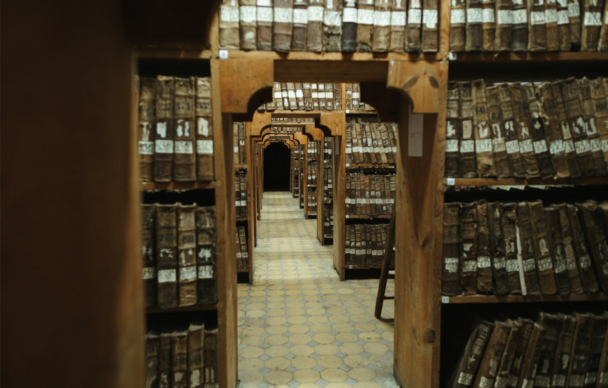

Dripping water hollows a stone. How the Central State Historical Archive of Ukraine in Lviv survived the Russian attack
26.05.26
In March 2026, Russians attacked the Bernardine monastery complex in Lviv, a UNESCO World Heritage Site. A “Shahed” drone hit a part of the complex that now functions as a residential building, causing fire and destroying apartments. At the Central State Historical Archive of Ukraine, the windows were shattered, and the documents from the 12th to 20th centuries preserved there could be seriously damaged by the attack.
The church building “protected” the archive's premises from severe damage that could have been fatal; the archive has been in a precarious state for a long time and in acute need of restoration, even without Russian attacks.
How are the most valuable documents preserved and restored here? What can they tell us, and what does the archive currently need?
“In an archive, everything needs to be ordered, like in a pharmacy,” Olesia Stefanyk, the archive’s director, says. 1,120,000 case files encompassing nine centuries are under her purview.
The documents are kept in the walls of the former Bernardine monastery, built in the 1600s. It’s easy to get lost here: the total length of the archive shelves is 12,000 meters.

In 1784, the monastery's buildings were handed over to the state (the Austrian Empire at the time), and the Bernardine Archive was established here.

“At that time, documents were transferred here from all over Galicia because there were never enough spaces for the archives”, Bohdana Petryshak, the Head of the Department of Historical Documents, says. At first, court documents from the 14th to 18th centuries were kept here, and other collections were added with time.
Bohdana easily maneuvers through the corridors between the shelves: she’s been working here for 21 years. Glimpses of 17th-century frescoes can be seen behind the shelves — Bernardine monasteries from different parts of Western Ukraine. “The order owned numerous monasteries, churches, lands, and donations from the faithful and patrons,” Olesia Stefanyk explains.

Bohdana swiftly retrieves artifacts from under piles of papers and from the shelves. The first one is a birch bark manuscript from the 12th century, found by the archaeologist Ihor Sveshnikov in the 1980s in Zvenyhorod.

Bohdana dons white cotton gloves and carefully removes the cover: “It’s a text carved on birch bark with a special pen that could be metallic or, for example, bone. The bark was stretched out to carve the text, and then rolled back. This manuscript is a note from Hovenova to Nezhych asking to return the debt”.

“It’s written in 1110, but even an ordinary Ukrainian person can read it today if looking carefully,” Olesia Stefanyk adds. Such finds are very rare in modern Ukrainian territories: the acidity of the soils prevents preservation of most such artifacts.

The oldest parchment document here is the papal bull from Pope Gregory IX, dated 1233. “In it, the Pope gives Dominican monks permission to pass through our territories,” Olesia Stefanyk says.
“Such permits were crafted like charters to ensure longevity. They were usually confirmed by the grantor's signature and seal. They were granted to cities or to city representatives,” Bohdana Petryshak explains.

In this collection of the archive, there are 895 case files written on parchment — from the Privilege that granted Magdeburg rights, which defined the rules of life in a medieval city, to private grants for, for example, a field, a right to own a mill, or a right of passage somewhere without a toll.

Here, in a former monastery, the manuscript of the Union of Brest from 1596 is preserved, the document that created the Greek-Catholic Church, uniting parts of the Kyiv metropoly with the Roman Catholic Church. The second original is in the Vatican. “There is a discrepancy between the two documents: we lost a seal of one of the metropolises, and Rome still has it. But we have a very well-preserved text, despite the parchment being slightly damaged. In the Vatican, they have a well-preserved parchment, but the text is much less visible,” Olesia Stefanyk says. The document was transferred from the Archive of the History of the Union owned by Andrei Sheptytskyi. “The metropolitan collected old documents from Galician territories, from Volyn, from wherever he could,” Bohdana Petryshak explains. In 19th-century photographs, the parchment is already damaged; the causes remain unknown.
Having survived the Soviet occupation, the collection has been endangered again since 2022. To secure the most valuable documents, the archivists received a grant from the International Alliance for the Protection of Heritage in War Zones (ALIPH), which provided 11 fireproof cabinets. They provide 120 minutes of full protection in case of a fire. “On April 13, we already had the first six cabinets where we hid unique documents,” Olesia Stefanyk says.

We enter the oldest part of the monastery, the old library, where the core of the collection is kept — the court books that were transferred to the Bernardine Archive in 1784. At first, there were 12,000 of them, but currently, some have been transferred to partner institutions because they belong to other communities. For example, part of the case files — municipal books of Horodło and Grabowiec — were transferred to Lublin.

Currently, 6,500 court books are kept in Lviv.

“I have a favorite book here,” Olesia shares. It’s an accounting book from the 14th century that survived the first great fire in Lviv in 1381. The fire destroyed many documents from the original archive established after Lviv was granted Magdeburg rights.

The archive also keeps the “Golden Book” of royal privileges granted to Lviv. It consists of 133 privileges and decrees granted to the city by kings at different times, from the 14th to the 17th century. Unlike most books preserved in the funds that are written in elaborate Gothic handwriting, some of the records in the “Golden Book” are easily readable; sometimes it’s even hard to believe they were handwritten. It’s easy to discern between the “Polish” and the “Austrian” periods; they markedly differ in their styles of writing documents.

The “Golden Book” has been digitized and is now easily accessible online. Besides, there was a plan to place QR codes in the Lviv city center that would lead to information from the “Golden Book” about each building. “But in 2022, the priorities were shifted from such projects,” Olesia recalls.

Such valuable documents are not allowed outside the vault; instead, they are digitized and uploaded for online open access. The archive has been digitizing its collections for over 20 years. Not only does this ensure preserving their integrity, but it also lessens the burden on employees who don’t need to process hundreds of requests for access to the information. These documents are used, for instance, for research on the history of the church, education, and culture; the governing systems; economic and historical geography; and social and political life, as well as for genealogical research in the Halychyna, Volyn, Podlasie, and Chełm regions.

“Every year, we renew our international agreements with the Central Archives of Historical Records in Warsaw, with the Head Office of State Archives in Poland, with the State Archive in Przemysl, and with FamilySearch International, USA, on digitization, preservation, processing, and transfer of digital copies. In 2022, we developed cooperation and signed an agreement with JewishGen, an international Jewish genealogical society in the USA,” archivists add.

“These are our operators of digitization,” Olesia introduces us to three members of the team that creates digital copies for the archive. In a couple of small rooms, two German scanners digitize around 600 images per day.

“The laser measures the distance from the 'head' to the 'cradle’,” Andrii Berezivsky, the Acting Head of the Information Technology Sector, explains to us. The cradle is the lower part of the scanner that can be moved up and down depending on the thickness of a document or a book, so that the material is placed evenly. The scanning speed depends on the condition of the document; if it isn’t well preserved, the scanning target rate is reduced by half.

“Currently, the archive is working on implementing the Program for Digitization of the Archival Informational Resources, established for 2026-2030; in its framework, we plan to create over a million copies. We chose the most frequently requested and relevant funds for digitization: the documents from the oldest period (15th to 18th centuries) — books of historical records, materials on local self-government of cities and towns in Halychyna; genealogical documents (parish registers, first of all); and personal collections that elucidate various aspects of the socio-political and cultural life of the region,” the archivists share their plans.
Due to the full-scale invasion, they are trying to maximize the volume of digitized documents. “But it’s not as swift a process as one might imagine — just take a case file from a shelf and scan it. In fact, employees from different departments and directions are engaged in the preparatory process. The funds’ curators issue case files from the vaults only after having examined them. Many case files, especially parish registers, require immediate restoration and are promptly transferred to the laboratory. Only after that, the case file can be digitized”, Olesia adds.
So we go to the restoration workshops.

The lab space is warm: controlled temperature is important for restoration. The parish register books are being restored when we enter.

After unbinding the book, the restorers evaluate the damage of each sheet and decide on the restoration process: “If it’s in a better condition, we reinforce its parts and glue a specific type of paper around the perimeter.”

Getting the right type of paper is a difficult task, especially during the invasion: it’s produced in small quantities and is rather expensive. They found a solution on the other side of the world. The American partners introduced Olesia to their Japanese colleagues, who donated five types of Awagami paper, in different weights, to the archive. The lab workers say it’s one of the highest-quality materials of this type in the world.

“Our documents were created in the course of several centuries, so for different record complexes we need paper of different weights. For instance, for the collection of the cadaster maps created during the 18th and 19th centuries, we need denser paper for gluing and restoring the folds. For our collection of parish register books from the 17th to 20th centuries, the largest in Ukraine, we will be using two types of paper, depending on the time they were created. On the other hand, for restoring delicate spots, spines, and margins of the court books of cities in the Western Ukrainian region from the 15th to 18th centuries, we will use lower-density paper. After the restoration, the characteristics of the document’s paper are preserved,” the archivists say.

This paper is used by the most prominent world museums: the Metropolitan in New York and the British Museum in London, Olesia Stefanyk says. Currently, they are running out of the first batch, but the representatives of the Japanese producer are eager to donate another one.
Thanks to this partnership, thousands of documents were restored.

“Sometimes the documents from the 15th century are preserved better than those created during WWII,” Olesia Stefanyk adds.

They are also looking for partners to renovate the building; it has been in need of restoration for many years. There have always been problems with humidity, but in recent years the situation has become much worse, Olesia says. The biggest threat is the decrepit wall that had a tilt of 13 centimeters and needed urgent reinforcement. In summer 2024, part of the brickwork collapsed. “Currently, it’s a critical problem for us, because the damaging impact on priceless funds is constantly growing. Temperature and humidity conditions are changing.”

However, the archive building is an architectural monument of national significance, and any renovation work here requires numerous permits, expert evaluations, and technical documentation, Olesia says.

“The situation was really bad,” she adds. Our partners reacted immediately: the National Institute of the Polish Cultural Heritage Abroad ‘Polonika’ helped reinforce the wall with wooden supports, and the Lviv City Council and the Lviv Regional Military Administration also gave funding.
Currently, the building is reinforced with metal tie rods from the inside. This was probably what saved the building from even more damage after the impact of the “Shahed”: only windows were shattered; they are currently covered with OSB panels.

But the impact created new cracks in the building. “Even a small impact can make the document more fragile with time and lead to more rapid aging,” the archivists say.

However, the reinforcement works are in full swing, and the archive is looking for new partners to proceed: “We currently need funding to continue restoration works. This is our first and main task. The building also needs a serious evaluation, because along with the already ‘sick’ wall, two others also need tying. It’s work for the future.

Humidity is the main problem. Our sewage collector is in disrepair. We also need resources for drafting technical documentation. And then, we need funds for hydroisolation and drainage to drain the water from the walls that were waterlogged for centuries”.

From its foundation, the Bernardine monastery served as a fortification, protecting the eastern flank of Lviv. Embrasures that are still visible on the walls from the Mytna square side remind us of it. Today, despite the drone impact nearby, some of the most valuable historical records in Ukraine are still under reliable protection. But dripping water hollows a stone, and this proverb comes to life very literally in the fate of the archive.
The reportage is published with the support of the Alfred P. Sloan Foundation.